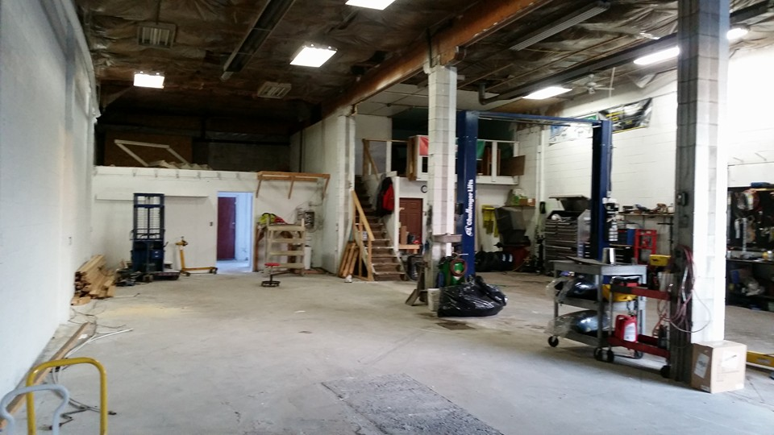
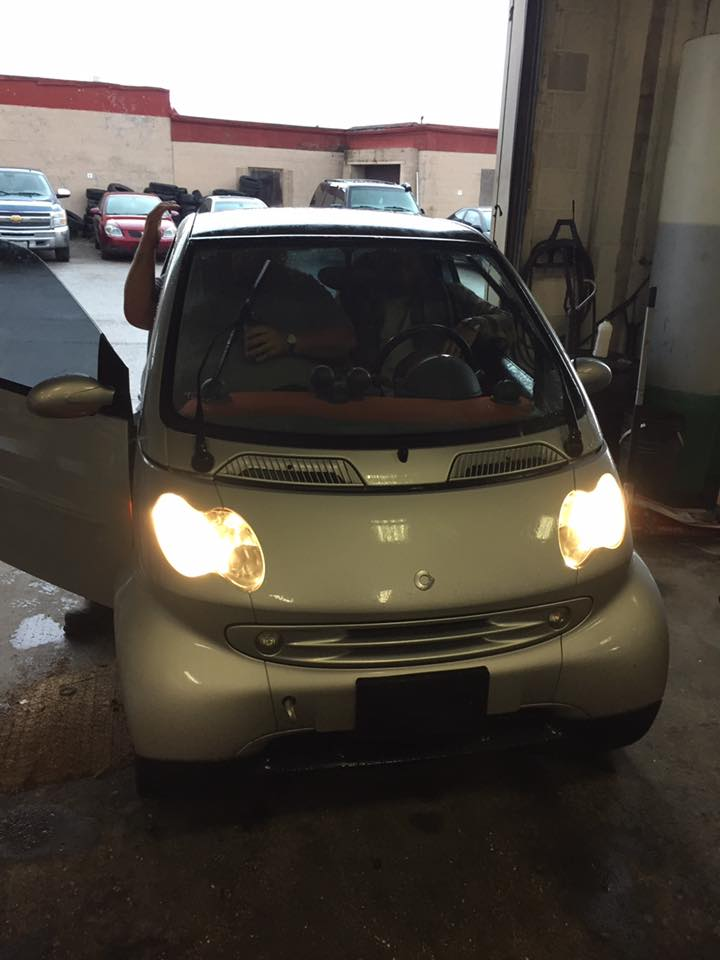

Vehicle diagnostics
Getting to the source of the issue.
Diagnostics, repairs and maintenance for the road ahead. KC Automotive serves Orillia and surrounding areas with a practical, straightforward approach.

01 / WHAT WE DO
From figuring out what's wrong to getting it fixed, KC Automotive focuses on the work that keeps your vehicle moving.
Getting to the source of the issue.
Practical service for the everyday drive.
Attention where it matters most.
02 / INSIDE KC AUTOMOTIVE
KC Automotive's diagnostic-specialists mark says it plainly. The shop serves Orillia and surrounding areas with quality service at an affordable rate, according to its Facebook introduction.
The images here come from an older business photo gallery. They may not show the current Colborne Street location.

03 / WORD GETS AROUND
★★★★★“First time taking our vehicle to this mechanic, excellent service, amazing staff!”
★★★★★“These guys are hands down the best! I have full trust in their ability to diagnose and fix any issues I have.”
★★★★★“Tight schedules But amazing work”
*Google rating; review count reported by Birdeye. Reviews are excerpts from the research listing.
04 / COME BY OR CALL
Serving Orillia and surrounding areas.